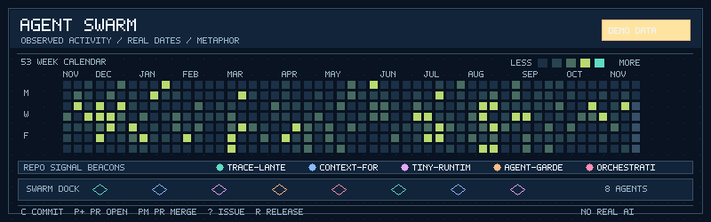
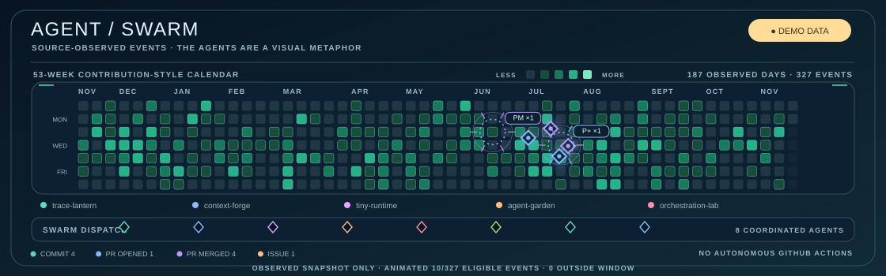
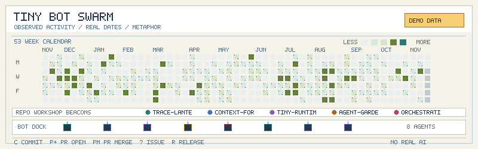
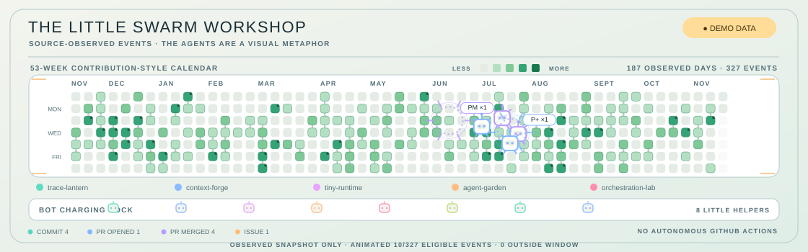

Geometric Swarm · Dark


Elegant swarm paths and symbolic event-packet processing. View still
The same source-backed simulation on a deliberately more populated, reproducible fictional GitHub-style calendar. This demonstrates what the swarm looks like when events span the whole year. Nothing here describes a real user's activity.


Elegant swarm paths and symbolic event-packet processing. View still


A playful assembly crew co-ordinates across the calendar. View still
Return to the interactive shared-fixture preview
The heatmap represents unique recorded event IDs in a normalised synthetic snapshot, not verified GitHub contribution totals. Original GitHub actions were not performed by these agents. All animations are deterministic, offline and token-free.